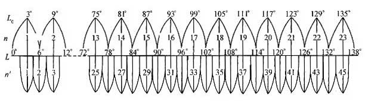

地信论坛收集了一些关于坐标系的常见问题，对于理解和使用都有很大的帮助，值得收藏。

- 问：我这有2个不同坐标的shp要素，这2个要素是同一地理位置的，但是在arcmap中打开不能显示在同一范围内，所以我将其中一个要素的坐标转换成另一个要素的坐标，但是转换后，2个要素还是不能显示在同一范围内。怎么办？
- 答： 能不能叠加的关键是各自的坐标系要正确，不一定要相同。检查数据的坐标系，错误的重新定义成正确的即可叠加到一起。
- 问：犯了个错误：有一个shape文件是54坐标系的，我不小心定义成80坐标系了，然后以之为标准对其它shape文件进行空间配准，今天弄分幅图的时候才发现错位了，请问有没有什么办法补救呢？
- 答： 把那些数据都重新定义成54坐标系。
- 问：如何看出定义的坐标系是错误的？我听说是从extent能看出来，但是我怎么看不出来？
- 答： 从extent看出坐标系是否正确要建立在对各种坐标系的坐标形式、坐标范围很了解的条件下。比如wgs84等地理坐标系的范围应满足-180≤X≤180，-90≤Y≤90，再比如Xian_1980_3_Degree_GK_Zone_38坐标系的坐标的形式是（38XXXXXX，YYYYYYY）等，如果你数据的坐标形式是(19XXXXXX,YYYYYYY)而你定义成Xian_1980_3_Degree_GK_Zone_38就错了。当然有些错误从extent是看不出来的，比如你的数据正确的坐标系是Xian_1980_3_Degree_GK_CM_111E而你定义成了Beijing_1954_3_Degree_GK_CM_111E，这个错误从extent是看不出来的。
- 问：我的数据是wgs84坐标系的，在dataframe的属性里将display unit改成米后右下角显示的坐标就会变成以米为单位，我想问这个坐标是怎么计算出来的？
- 答： 是根据赤道长度及经纬度计算出来的。地球长轴为6378137米，赤道长度为2×6378137×π≈40075016.686米，则赤道上1°≈111319.491米。假设某点的经纬度坐标为(63.767584,36.747445)，则将display unit换成meter后其坐标就是(7098574.996427,4090706.892127)，自己验证一下。
- 问：有一个数据有坐标系，是错误的，想进行修改，那么使用哪个工具呢？
- 答： 用define projection重新定义坐标系。
- 问：我的栅格是北京54投影坐标系下的tif格式文件，做裁切后为什么坐标系变成Krasovsky_1940_Transverse_Mercator了，我什么也没设置啊。
- 答： 你存成grid格式了吧？北京54和西安80投影坐标系的栅格转存成grid格式后会自动改变。北京54坐标系会变成Krasovsky_1940_Transverse_Mercator，西安80坐标系会变成User_Defined_Transverse_Mercator，这是历史原因造成的，不必理会它。
- 问：我用arcgis计算面积时，数据的坐标系为WGS_84，求出来的结果是平方度，如何将其转换为平方米？
- 答： 地理坐标系不适合求面积，平方度也不是面积单位，不同纬度1°×1°范围的面积不相同。可将你的数据用project转成WGS 1984 UTM投影坐标系后再求面积。
- 问：有一个无坐标系统的shp层，我用define projection给它定义坐标系统后，然后加到arcmap中来，提示Warning,inconsistent extent!这是什么原因？怎么解决？
- 答： 坐标系定义错误，比如有带号的坐标系数据定义成没带号的坐标系，或者把投影坐标系的数据定义成了地理坐标系等等。找出正确的坐标系并用define projection或在arccatalog里重新定义。
- 问：我想计算中国各大港口之间的欧式距离，但用ArcGIS和google earth两种方式计算的结果相差200多公里，我用ArcGIS计算的步骤如下： a搜集天津港和深圳港的经纬度并制作成Excel表 b在ArcCatalog中创建port点图层（shapefile格式），选择GCS-WGS1984 c在ArcMap中添加port图层，使用Tool->add XY data创建点图层中要素 d使用project转换port图层，投影坐标系选择PDC-WGS1984 e使用Point Distance计算点间距离
以上五步中，哪一步出错了？ - 答： 同样两地在不同坐标系下所求的距离有可能不相等。google earth里求距离、面积等并不是用PDC-WGS1984坐标系算出的，用此坐标系算出的距离、面积和实际的数比有很大的误差。一般计算距离时用等距离投影，计算面积时用等面积投影。
- 问：按理说，计算距离等应该在投影坐标系下进行，书上也说经纬度坐标系不是一种平面坐标系，因为度不是标准的长度单位，不可用其量测面积长度。但是在地理坐标系下（比如WGS84)arcmap的measure工具是可以选择公里为单位进行测量的，请问这个是怎么计算长度的（比如以什么投影系统为基准）？
- 答： 用测量学的方法根据两点的经纬度计算出的球面距离。
- 问：为什么我的数据做了clip后变形很大，原来不相连的地方都连在一起了？
- 答： tolerance的问题。一般原因是地理坐标系数据没有定义坐标系或定义成了投影坐标系。当地理坐标系数据没有定义坐标系或定义成了投影坐标系时系统默认的tolerance是0.001，这对投影坐标系的数据来说是合适的，这样的数据不会出错。当你的数据是地理坐标系时，0.001就显得太大了，相当于投影坐标系的100米左右，当两个节点距离小于这个值时就会合并成一个，所以就会出现处理后的数据不该合并的地方合并了，惨不忍睹。
- 问：在做Extract By Mask时出现错误： An error was encountered while executing ExtractByMask. (“esriGeoAnalyst.GridEngine”) Could not get a valid extent. Failed to execute (ExtractByMask_3). 请问是什么地方出错了？改如何解决呢？
- 答： 检查是否都正确定义了坐标系。
- 问：创建点时出错提示“不能创建要素坐标或测量值超出范围”，这是什么原因？
- 答： 这问题经常出现在空的图层中“随意画”时。要素类或shapefile是有有效范围的，超出这个范围就不能创建要素了。
- 问：我在用ArcGIS计算DEM坡度时，最低0度，最高89度，平均坡度也达到了87度，肯定是不对的，这是什么原因？
- 答： 一般出现这种情况是因为你的数据是经纬度的坐标系。转换成投影坐标系后再做。
- 问：为什么地理坐标系dem求出的slope是错误的呢？
- 答： 因为slope和距离、高程有关，你的数据中XY坐标是度，Z坐标是米，单位不一样，但数据中可能只有X、Y的单位信息，没有Z的单位信息，系统会认为它们单位都一样，所以计算会出错。比如说，在地理坐标系下，两个象元相距0.001度，高程相差1米，在地理坐标系下计算时这两点连线和水平面夹角的正切就是1000，也就是两点连线和水平面的夹角是89.943°
- 问：为什么我的栅格不能做配准，georeferencing工具条中不出现栅格图层名？
- 答： 因为你的栅格的坐标系信息和data frame的坐标系不一致，把data frame的坐标系设成栅格的坐标系后就能做了。
- 问：在arcmap中显示全国地图全图比例尺大概有1比几百万吧，也不知道被我执行了什么操作，地图好像被所缩小了一样，在整个中国全显示的情况下，比例尺竟然达到1:128,请问这是怎么回事？
- 答： 错误的定义了坐标系，将地理坐标系数据定义成了投影坐标系，或者对无坐标系信息的地理坐标系数据在data frame里将map unit设成了meter。
- 问：给shp格式的定义坐标系，用的是define projection，但是定义完后出现了”Datum conflict between map and output”这句绿色字体的警告，什么原因？
- 答： 提示Datum conflict between map and output是因为你的数据的坐标系和dataframe的坐标系不一致，一般可不必理会。
- 问：先打开有地理坐标系的图层1，然后在这个图层上面叠加一个无坐标系统的图层2。图层2也和图层1一样都是地理坐标系，但图层2显示的地理位置却全部错了，飞到老远的地方去了，原来是可以叠加到一起的，这是为什么？
- 答： 那是因为你当前的的dataframe的坐标系统和图层一的不一致，而图层一因为有坐标系统能正确动态投影，而图层二没有坐标系统不能正确投影。你试着打开arcmap后只加进这两个图层看看能否正确叠加。
- 问：我们需要提交shape成果，要求：“以度为单位的地理坐标系数据，大地坐标参照系为1954北京坐标系”，我的数据现在是北京54坐标系，显示的是六位七位的公里网格坐标，我转换了坐标系后还显示的六七位数，不是经纬度，我试了老半天了，开始把投影删了，直接定义投影为地理坐标系里的asia的beijing1954，但是单位还是错的，而且每次一加载还提示一个错误，哪里出问题了？
- 答： 你需要的是转换坐标系而不是重新定义坐标系。转换坐标系要用project（矢量）或 project raster（栅格）来做而不是用define projection来做。
- 问：地理坐标系不是球面坐标系么，如果没有投影的话，为什么能在arcmap这个平面上显示呢？
- 答： 地球表面是球面，但地图是平面的。绘制地图时在平面上建立一个直角坐标系，x轴代表经度，y轴代表纬度，坐标轴单位是度。地球上任意一点都有经纬度，按照这个经纬度在地图上找到对应坐标点即可将球面上的点转绘到平面地图上。
- 问：怎样得到某个投影坐标系的坐标范围？比如西安80，37°带坐标系，它的X、Y最大最小值分别是多少，怎么计算？
- 答： x坐标范围：37500000加减赤道1.5°的长度 y坐标范围：正负二分之一中央经线长度
- 问：UTM 的是“以中央经线投影为纵轴x，赤道投影为横轴y”，高斯克吕格 具体构成方法是“以中央经线为x轴，赤道为y轴”，而在描述投影坐标系统时说的是“中心水平线称为x轴，中心垂直线为y轴”—-以上引号皆摘自清华大学出版的那套上下册的gis书，请问，这到底是为什么？我校正图像的时候都晕乎的，到底哪个是x，哪个是y？
- 答： 数学坐标系（也叫笛卡尔坐标系）水平的是x轴，垂直的是y轴，测量坐标系水平的是y轴垂直的是x轴。你说的那书是以测量坐标系叙述的，而 在gis软件里一般都用笛卡尔坐标系。入乡随俗，既然用gis软件就要按笛卡尔坐标系的规矩来做，不要被书上说的所左右。
- 问：我看一本书上写的是，在使用十进制度的wgs_1984坐标系中，数据精度是1厘米，容限值为（0.01/（63781370.017453292519943299））/10，约等于8.983e-9，当时看了之后不明白为什么要除以（63781370.017453292519943299）这串数字，现在也不明白，我现在的数据的Projected Coordinate System是WGS_1984_UTM_Zone_49N，在按照此作拓扑时，拓扑容限值默认是0.001，而不是8.983e-9，不知为什么，我如果把0.001改成8.983e-9，在结束时就会出错，不知为什么，请大家指教。
- 答： 除以那个数是计算在赤道上1米相当于多少度的一段圆弧。360°=2π赤道半径（≈6378137）米，则1米≈360°/(2π6378137)，而2π/360≈0.017453292519943299，也就是1米≈1/(6378137*0.017453292519943299)° 而一般设为容差为精度的10倍。根据上面的分析不难得出那个结果。 WGS_1984_UTM_Zone_49N的单位是米，所以该设成0.001，而不是设成8.983e-9，只有以度为单位的地理坐标系才能设成8.983e-9
- 问：我的shp数据文件是1980坐标系的，不过没有加大数的，请问如何加大数啊？就是x坐标前面都加一个40.
- 答： 用project或project raster转换到相应有带号的坐标系。
- 问：原始数据为gtopo 1km的全球dem，地理坐标系为wgs84，但经过投影转换后，dem严重变形。我选择的是兰伯特双标准纬线等角圆锥投影，投影参数为：
Projection: Lambert_Conformal_Conic False_Easting: 0.000000 False_Northing: 0.000000 Central_Meridian: 97.000000 Standard_Parallel_1: 30.000000 Standard_Parallel_2: 62.000000 Latitude_Of_Origin: 0.000000 Linear Unit: Meter (1.000000)
Geographic Coordinate System: GCS_WGS_1984 Angular Unit: Degree (0.017453292519943299) Prime Meridian: Greenwich (0.000000000000000000) Datum: D_WGS_1984 Spheroid: WGS_1984 Semimajor Axis: 6378137.000000000000000000 Semiminor Axis: 6356752.314245179300000000 Inverse Flattening: 298.257223563000030000 - 答： 全球数据不适合用兰伯特双标准纬线等角圆锥投影，可改用Robinson投影坐标系。
- 问：投影信息中有几个参数不是太了解：首先Projection: Gauss_Kruger这个是知道的，下面的Parameters:参数是指什么，通常取什么值呢？还有Angular Unit: Degree(0.017453292519943299) 这个角度为什么取这个特定值，他是怎么计算出来的？还有一个我在程序里看到有个参数，取值是57.29577951308232，这个是代表什么？希望了解的帮忙解释一下
- 答： 每种投影的Parameters个数不一定一样、值也不一定相等，一般有伪偏东false_east、伪偏北false_north、中央经线central_meridian、投影原点latitude_of_origin、线性单位linear unit等。0.017453292519943299是一度等于多少弧度，57.29577951308232是一弧度等于多少度。
- 问：我有一个政区图矢量文件，坐标是（123456，1234567）这样的形式，视图属性里显示无坐标系。我就利用arctoolbox 定义一个地理坐标系，但是定义后显示的经纬度数值没任何变化，这是怎么回事。后来定义投影坐标系数值也是没变化。
- 答： 定义坐标系不会改变坐标的数值。你的数据应该是投影坐标系的数据。先搞清楚正确的坐标系并定义之，需要经纬度的话用project转换到相应的地理坐标系。如果只是要显示经纬度的话，也可以正确定义坐标系后在dataframe的属性里将其坐标系设成相应的地理坐标系，并把display unit设成度或度分秒。
- 问：为什么同一个区域两个坐标系完全一样的SHP文件却无重合？
- 答： 至少有一个数据的坐标系是错误的。能否正确叠加不在于两个数据的坐标系是否一样，而在于是否正确。
- 问：有个投影坐标系的世界地图，中国在边上，出图时怎么能使中国位于中间呢？
- 答： 投影坐标系参数里边有个中央经线（Central_Meridian），将data frame的坐标系设成世界地图的坐标系，并把中央经线设置为105°。
- 问：两个数据坐标系不同，为啥加进arcmap中能够重合？
- 答： arcmap会自动将加进去的数据的坐标系在内存中转换到data frame的坐标系来显示，即所谓的动态投影。它只是在内存中转换，并不改变数据本身的坐标系。
- 问：我将矢量数据从Beijing_1954_3_Degree_GK_CM_111E转换到了Beijing_1954_GK_Zone_19N，为什么坐标值没有变化啊？
- 答： 这两个坐标系的投影方式、中央经线、原点、伪偏东等参数都一样，计算坐标的方法也就一样，所不同的只是包含范围不一样，所以在三度带的范围内所有点在这两个坐标系下的坐标都一样。
- 问：我原来有个数据里的图形是圆形的，现在怎么变成椭圆了，我保证数据没有动过。
- 答： data frame的坐标系和数据的坐标系不一致造成的，比如你数据的坐标系是以地理坐标系，现在用了投影坐标系显示。
- 问：为什么我的全国地图显示出来比较扁，和挂图上的中国地图样子不一样呢？
- 答： 不同坐标系下同一个图的样子可能会不一样，若你的全国数据是在地理坐标系下显示的就会看起来比较扁。
- 问：我的数据坐标系为： China_Lambert_Conformal_Conic Projection: Lambert_Conformal_Conic False_Easting: 0.000000 False_Northing: 0.000000 Central_Meridian: 125.000000 Standard_Parallel_1: 42.000000 Standard_Parallel_2: 51.000000 Latitude_Of_Origin: 0.000000 Linear Unit: Meter
GCS_Beijing_1954 Datum: D_Beijing_1954 添加经纬度grid后经线和纬线不是直线，我想要直的经纬线该怎么做啊？ - 答： 将data frame的坐标系设为相应的地理坐标系，即Beijing 1954地理坐标系。
- 问：原有的SHP图层是没有投影的，我用define projection 把投影转成albers，可是为什么中国地图还是扁的，查看图层投影已经是albers了
- 答： 应该先用define projection定义正确的地理坐标系，再用project转换到albers投影坐标系，而不是直接定义成albers投影坐标系。
- 问：我在arcmap里面加载了一副中国省界shp数据。右下角显示的坐标是：102.968 5.936 Meters…单位是米，但是102.968 5.936分别代表的是经纬度啊，这里显示成米，不知道该怎么转换呢？
答： 两种可能： 1、无坐标系信息的数据在data frame的特性里将map unit设成了meter 2、错误地将地理坐标系的数据定义了投影坐标系
- 问：地理坐标系数据想转成UTM投影坐标系，数据不在一个6°带范围内该怎么选坐标系？
- 答： 若数据东西跨度不超过6°，可修改已有的坐标系，建个非标准的坐标系，中央经线选你数据范围中间的经度。例如我的数据东西范围是东经105.5°到东经110°，跨WGS_1984_UTM_Zone_48N和WGS_1984_UTM_Zone_49N两条带，我可修改WGS_1984_UTM_Zone_48N坐标系的参数，中央经线设为108°，名称改为WGS_1984_UTM_Zone_48N_A。 若东西跨度超过了6°就不适合用utm坐标系了，用其他投影坐标系吧，例如lambert投影的坐标系。
- 问：现有一批国内某地区的数据，跨带很广，要拼接到一起，那这些数据在投影上应该如何选择，尤其是大比例尺地图，还是用常规的分带投影吗？ 比如按惯例1：10w的数据是6度分带，现在假如有17-21带的数据，放大到一定程度以后如果还是6度分带并且统一到一个带，两边的地图肯定会变形很大；如果不统一到一个带，接缝的地方可以正常拼接吗？ 这种情况下是大比例尺地图也使用WGS84的球面坐标呢？还是将这些数据都投影到一个带，即使变形也不管？
- 答： 研究区域跨多条带拼接时应该用albers、lambert等投影坐标系来做。
- 问：全国数据是albers坐标系的，怎么将经纬网添加上去,线线都是直的呀?
- 答： 检查data frame的坐标系是否是地理坐标系。data frame设成数据的坐标系后应该就正确了。
- 问：我将地理坐标系的全国数据转换到了albers投影坐标系，但转换后最后出来的地图不是北朝上而朝左了，这是哪里出问题了呢？
- 答：检查中央经线设置是否正确，全国albers坐标系的中央经线通常用105°。中央经线决定了图形旋转的方向和角度，与中央经线为105度的图相比较，小于105度就会向左转，大于105度就会向右转。
- 问：DEM栅格图转成点图层，操作Add XY Coordinate时，计算出来的点坐标是以米为单位的，请问我想得到经纬度值应如何操作呢？
- 答：将data frame设成地理坐标系，用calculate geometry按data frame的坐标系计算点的经纬度坐标。
- 问：一个图层从WGS-1984-Albers到xian-1980-Albers，下面的Geographic transformation怎么选择？
- 答：因WGS-1984-Albers到xian-1980-Albers是不同椭球体之间的坐标转换，精确转换需要用转换参数来定义Geographic transformation。转换参数可去当地测绘部门索取或购买。如果精度要求不是很高的话可用arcgis的动态投影转换，即：将data frame的坐标系设成xian-1980-Albers，按data frame的坐标系导出数据。
原文链接：坐标系常见问题解答